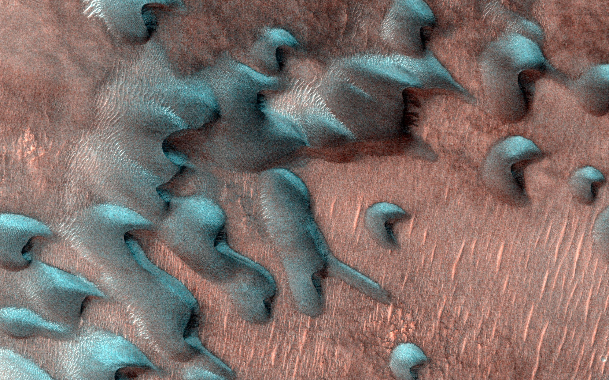
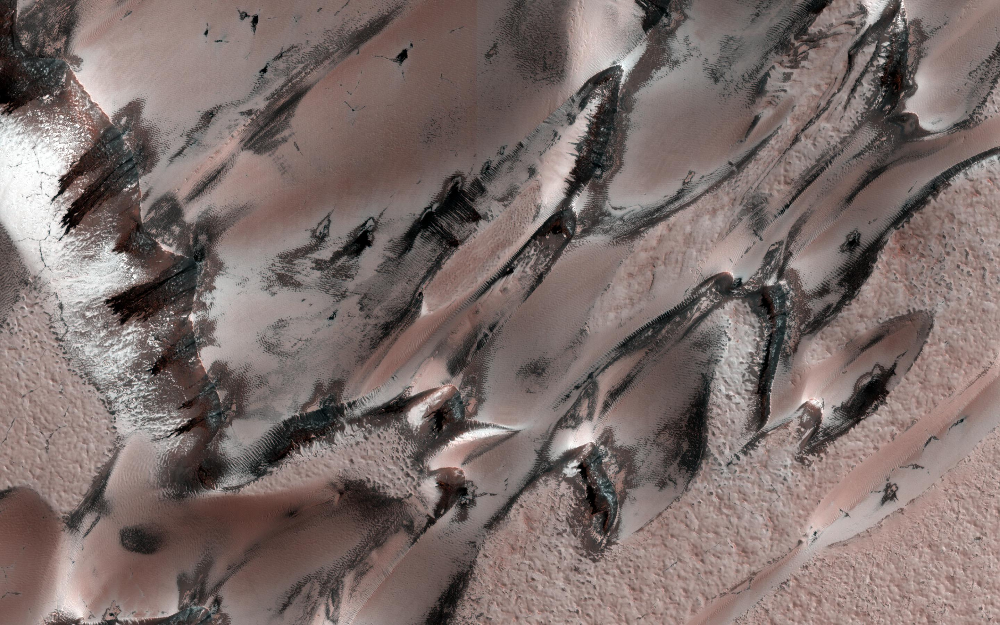

Dunas congeladas em Marte

Quando o inverno chega a Marte, a superfície é transformada em uma cena de férias verdadeiramente sobrenatural. Neve, gelo e geada acompanham as temperaturas abaixo de zero da estação. Alguns dos mais frios ocorrem nos polos do planeta, onde chega a 190 graus Fahrenheit negativos (menos 123 graus Celsius).
Por mais frio que seja, não espere neve digna das Montanhas Rochosas. Nenhuma região de Marte recebe mais do que alguns metros de neve, a maioria dos quais cai sobre áreas extremamente planas. E a órbita elíptica do Planeta Vermelho significa que leva muito mais meses para o inverno chegar: um único ano em Marte é em torno de dois anos terrestres.
Megadunas

A HiRISE capturou essas "megadunas", também chamadas de barchans. Geada de dióxido de carbono e gelo se formaram sobre as dunas durante o inverno; Quando isso começa a sublimar durante a primavera, a areia das dunas de cor mais escura é revelada. Crédito: NASA/JPL-Caltech/Universidade do Arizona Detalhes da imagem completa
Ainda assim, o planeta oferece fenômenos de inverno únicos que os cientistas puderam estudar, graças aos exploradores robóticos de Marte da NASA.